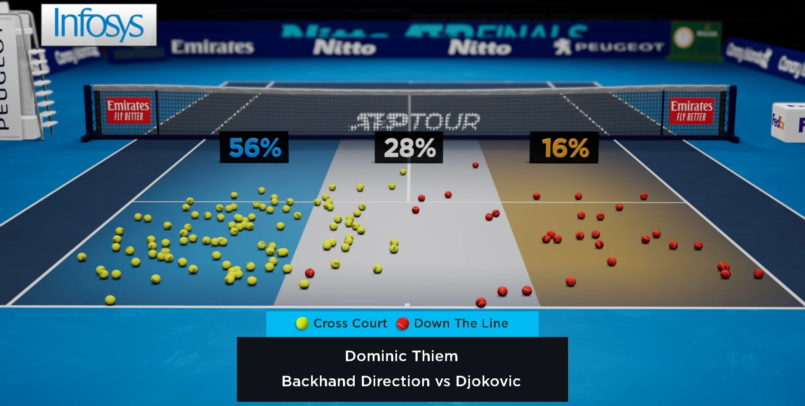

Ben Hetherington
Hello, world!
I'm a software engineer, who's looking to get into the games industry.
Here's a portfolio of games-related projects that I've worked on.
Projects
Finite Rhythm
- 2019
- Unity (C#, Cg/HLSL)
- WebGL
- University of Bath
My dissertation project was to develop an educational game for teaching finite automata, a theoretical topic in Computer Science. To try something different, I challenged myself to teach through a rhythm-action game, backed by an original soundtrack that I wrote and recorded. Developed in Unity, and playable on the web.
Play in Browser
HawkVR
- 2019-2021
- Unreal (C++)
- Windows
- Hawk-Eye
An Unreal-powered application visualises sport stats and officiating decisions in a virtual world, designed for TV broadcast. In addition to making changes for both Cricket and Tennis tournaments, I decoupled the distribution of maps from the software releases.
Experiments
Tetris 3D
- 2020
- Unity (C#), FMOD
- Spatial Reality Display
- Hawk-Eye Hack Day
An experiment with Sony's Spatial Reality Display, a stereoscopic display with head-tracking, which presents a scene in a virtual box. This seemed well-suited to a 3D version of Tetris, as you can look around to see where there are gaps to be filled. This experimental project was developed over two days as part of a 'hack day' at work.
Game Boy Color RPG
- 2015-2017
- Z80 Assembly
- Game Boy Color
- Personal Project
An experimental project, programmed from scratch while learning Z80 assembly. While this isn't a playable game, the engine contains a basic sound engine, variable-width text display, a fixed decompressor, a basic overworld game loop, and more.
View Repository Download ROM


Small Projects
Dungeon of Doom
- 2016
- Java (Swing)
- Desktop platforms
- University of Bath
Created as part of my first-year Java programming coursework. From the primitive command-line game that was initially given, I added multiplayer (via networking), a graphical interface with smooth animations, and a computer player.
Download Source


Arduino Judge
- 2015
- C
- Arduino
- University of Bath
Created as part of my first-year systems architecture coursework. Working together with a friend, we aimed to recreate the excitement of the original Game & Watch Judge, but through microgames that revolve around LEDs, piezo speakers, and LDRs.
View RepositoryAbout Me
I’m a creative and conscientious software engineer, who enjoys programming in a variety of languages to make projects happen. My two main passions are video games and music, and I am looking for an engaging role in order to launch a career in the games industry.